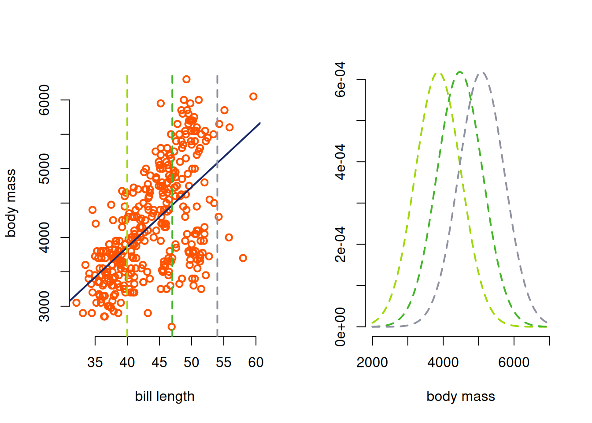
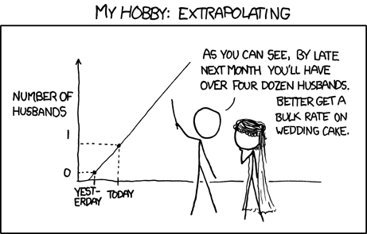
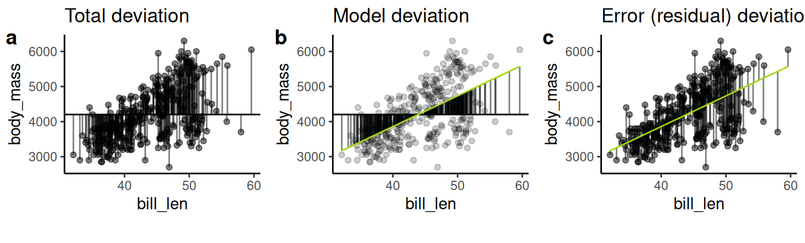

penguins2 <- penguins |> filter(!is.na(body_mass) & !is.na(bill_len)) ##filter out ones with NAs
plot(penguins2$bill_len, penguins2$body_mass, bty="n", ylab = "body mass", xlab = "bill length", lwd=2, col = palette()[1])
Many of the variables you are interested are continuous, not categorical. In this section we’ll extend our linear models to incorporate continuous predictor variables.
Continuing with the penguin example data, imagine that we are interested in understanding how bill length determines body mass – do penguins with longer bills also have larger bodies?
penguins2 <- penguins |> filter(!is.na(body_mass) & !is.na(bill_len)) ##filter out ones with NAs
plot(penguins2$bill_len, penguins2$body_mass, bty="n", ylab = "body mass", xlab = "bill length", lwd=2, col = palette()[1])
We can plot out the data and see that there is potentially a relationship between bill length and body mass. But, imagine we have a biological reason for wanting to model body mass as a function of bill length. How would we do that?
Instead of letting the mean of the model vary between categories, we now build our model with the mean as a linear function of the predictor variable. This model is called linear regression and it has two components: the deterministic function and the stochastic function
The deterministic function describes how the explanatory variables relate to the conditional mean of the response variable. In this case, since this is a linear model, we are modelling the response variable as a line:
\[\hat{y}_i = b_0 + b_1 \times x_i\] As before, \(\hat{y_i}\) is the conditional mean of the response variable for an individual with value \(x_i\), \(b_0\) is the intercept or the conditional mean of an individual with a value of \(x_i = 0\) (although this value will not be meaningful if it lies far outside the range of the data).
However, we can think of \(b_1\) now as the slope of the relationship between the predictor and response variable. This means that for every increase of 1 unit in \(x\), \(y\) increases by \(b_1\).
The stochastic function explains how the residuals are distributed around the conditional means predicted by the deterministic function. Since we are working with regular linear models, we will assume that the residuals are normally distributed.
\[ e_i \sim N(0, \sigma^2)\]
We can combine the deterministic and stochastic functions into one model:
\[\hat{y_i} = b_0 + b_1 \times x_i + N(0,\sigma^2)\]
or
\[\hat{y_i} \sim N(b_0 + b_1 \times x_i, \sigma^2)\]
Here is some math for estimating these parameters.
First, we start with the covariance between our response variable \(y\) and our explanatory variable \(x\). The covariance tells us about how much \(x\) and \(y\) jointly deviate from their means – a high covariance means that an individual with a high value of \(x\) likely also has a high value of \(y\) while a low covariance tells us that an individual with a high value of \(x\) could have any value of \(y\).
We write the covariance of \(x\) and \(y\) as \(\text{cov}_{x,y}\) and calculate it using the following equation:
\[ \text{cov}_{x,y} = \frac{1}{n-1} \sum(x_i - \bar{x})\times(y_i-\bar{y})\]
where \(n\) is the number of individuals, \(x_i\) and \(y_i\) are the values for the \(i^{th}\) individual, and \(\bar{x}\) and \(\bar{y}\) are the mean values of \(x\) and \(y\).
Notice that for a covariance, which variable is the explanatory variable and which is the response variable doesn’t matter – you could switch \(x\) and \(y\) and the equation would remain the same.
Covariance is related to a correlation (\(r_{x,y}\)), which tells us how reliably \(x\) and \(y\) covary by standardizing the covariance by how much \(x\) and \(y\) themselves vary, quantified using the standard deviations of \(x\) (\(s_x\)) and \(y\) (\(s_y\).
\[ r_{x,y} = \frac{cov_{x,y}}{s_{x} \times s_{y}}\]
Again, the order of variables doesn’t matter. \(r_{x,y} = r_{y,x}\)
In contrast, linear regression distinguishes between the response and explanatory variables because, here, the goal is to build a model that reduces residuals.
However, the equation for calculating the slope of the linear regression line (\(b_1\)) looks somewhat similar to the correlation but this time we only standardize by \(s_x\).
\[b_1 = \frac{cov_{x,y}}{s^2_x} = \frac{\frac{1}{(n-1)}\sum(x_i-\bar{x})(y_i-\bar{y})}{\frac{1}{(n-1)}\sum(x_i-\bar{x})^2}=\frac{\sum(x_i-\bar{x})(y_i-\bar{y})}{\sum(x_i-\bar{x})^2}\]
Note that \(x\) and \(y\) are no longer interchangeable.
While the equations for correlation and for the regression coefficient are similar, it’s possible to have a large correlation and a small regression slope (and vice versa).
In general, lots of variation within \(x\) will increase \(s_x\) and reduce the regression coefficient.
Let’s try applying a linear model to our penguin data. We’ll use the lm() function in R.
\[\text{Body mass}_i = b_0 + b_1 \times \text{Bill length}_i \]
model1 <- lm(body_mass ~ bill_len, data=penguins2)
model1
Call:
lm(formula = body_mass ~ bill_len, data = penguins2)
Coefficients:
(Intercept) bill_len
362.31 87.42 Based on these estimates, we can now write out our model as
\[\text{Body mass}_i = 362.31 + 87.42 \times \text{Bill length}_i \]
We can interpret this as for every mm of bill length increase, body mass increases by 87 grams.
We can also estimate \(\sigma^2\), the variance of the residuals.
sigma(model1)[1] 645.4333This allows us to write our model including the stochastic function as:
\[ \text{Body mass}_i \sim N(362.31 + 87.42 \times \text{Bill length}_i, 645.43) \]
We can also plot the predictions from this model over the raw data.
plot(penguins2$bill_len, penguins2$body_mass, bty="n", ylab = "body mass", xlab = "bill length", lwd=2, col = palette()[1])
abline(model1, col=palette()[3], lwd=2)Often we assume that the response data needs to be normally distributed to use a linear model. However, the real assumption of the model is not that the response data is normally distributed, but that the residuals are normally distributed.
Let’s look at the residuals from this model
library(broom)
myResiduals <- augment(model1) |> select(body_mass, .fitted, .resid)
hist(myResiduals$.resid, main="", xlab = "residuals", border="white", col=palette()[2])It helps me to imagine that the values themselves follow a normal distribution centered around a mean that follows the model predictions.

Regression was initially developed by Francis Galton. Galton was interested in understanding heritability of traits: how much was an individual’s trait determined by the genetic material they inherited from their parents. Galton focussed on height because it was easy to measure (although his motivation was understanding the heritability of intelligence). MORE HERE LATER
We have different tools for quantifying how confident we can be in the predictions made by a regression. They vary based on what type of prediction they are making. We won’t work through the math here but it is useful to know what is actually being predicted by these tools.
Confidence intervals relate to predicting the mean value of the response variable \(y\) for individuals with a specific value of the explanatory variable \(x\). When we calculate 95% confidence intervals we are bracketing the true regression line 95% of the time. Specifically, this means that if we repeated our sampling, analysis, and confidence interval generation many many times, we would find the true slope 95% of the time.
Prediction intervals give us an estimate of our confidence in predicting a value for the response variable \(y\) for one individual with a specific value of the explanatory variable \(x\). When we generate 95% prediction intervals we are bracketing 95% of potential individuals.
Prediction intervals will be much wider than confidence intervals because they include more variation.
Extrapolation is the prediction of \(y\) outside the measured interval of \(x\). It’s generally a bad idea because we have no way of knowing the relationship between \(x\) and \(y\) outside of what we’ve observed.

We can partition variation in our regression the same way we did in ANOVA. The concepts are similar but the math is slightly different.

As before, we can calculate the total sum of squares (\(SS_{total}\), panel A) as the sum of the squared differences between the model and the mean (\(SS_{model}\), panel B) and the squared differences between each individual and the model (\(SS_{residual}\)). Better fitting models will have higher \(SS_{model}\) relative to \(SS_{residual}\).
We calculate all of these values as follows: \[SS_{total} = \sum{(y_i - \bar{y})^2}\] \[SS_{model} = \sum{(\hat{y_i} - \bar{y})^2}\] \[SS_{residual} = \sum{(y_i - \bar{y})^2} \] \[MS_{model} = SS_{model}/df_{model}\] \[MS_{residual} = SS_{residual}/df_{residual}\] \[df_{model} = 1 \] \[df_{residual} = n-2\]
where \(\bar{y}\) is the mean response variable for the whole sample and \(\hat{y_i}\) is the model predicted value for individual \(i\) and there are \(n\) individuals in the sample.
We can calculate these values by hand or get them from the anova function
library(car)
anova(model1)Analysis of Variance Table
Response: body_mass
Df Sum Sq Mean Sq F value Pr(>F)
bill_len 1 77669072 77669072 186.44 < 2.2e-16 ***
Residuals 340 141638626 416584
---
Signif. codes: 0 '***' 0.001 '**' 0.01 '*' 0.05 '.' 0.1 ' ' 1Imagine you are a penguin researcher and you measure additional data on lifespan. You want to construct a linear model that models lifespan as a function of body mass. Write out the equation describing this model, and describe which parts of the equation correspond to the stochastic function vs the deterministic function.
What are the key differences between covariance, correlation, and linear regression?
What is the key assumption about the normal distribution made in a linear regression?
Your friend shows you an analysis of some new data: they have conducted a regression and calculated a 95% confidence interval. They tell you “95% of my data points should fall in this confidence interval.” Do you agree with them? Why or why not?